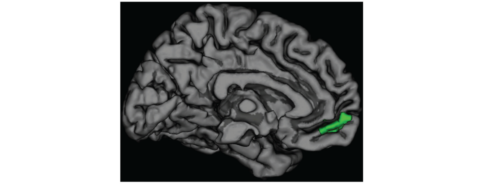
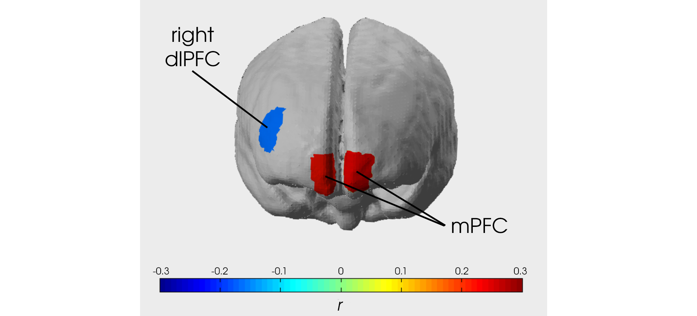
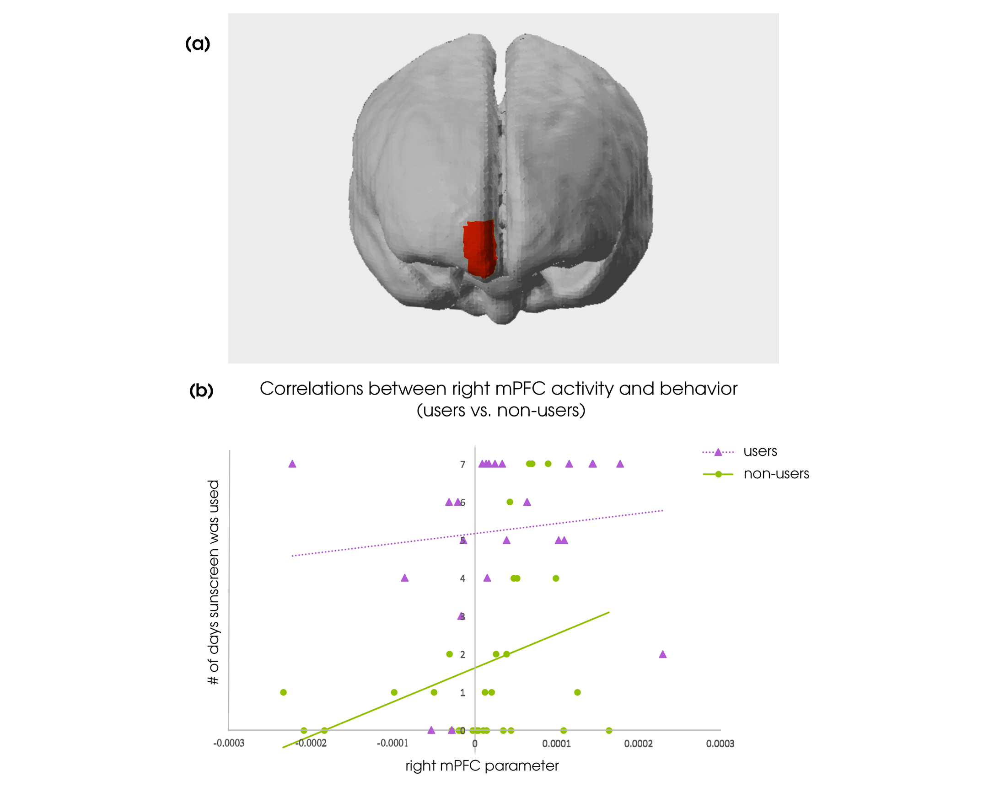

Persuasion in the Brain

The study of persuasion has a very long history - one of the longest in the formal discipline of social psychology (and if we consider rhetoric to be a practice in persuasion… the ancient Greeks have plenty of lessons to pass on). Yet, investigation of the brain’s role in persuasion is very new. It is only in the last decade that researchers have made a concerted effort to explore the neural mechanisms of persuasion and what leads people to change their behavior.
In the SCN lab at UCLA (before my time), Emily Falk and colleagues forged new ground in this young domain when they identified an area in the front of the brain called the medial prefrontal cortex (mPFC) that provides a signal of persuasion processes - the stronger it activates in response to persuasive messages, the more likely a person is to change their behavior in accordance with that message.
Since then, this effect has been replicated and extended several times and is (IMO) one of the more reliable neural signatures of behavior within the domain of social neuroscience. Persuasion-related mPFC activity is predictive even when controlling for self-reported intentions to follow a message, and can predict population-level behaviors like the success of anti-smoking campaigns.
 Figure from Falk et al. (2012) in Psychol Sci - The green highlighted area denotes the mPFC, where activity levels predict persuasion.
Given the mPFC’s utility as a predictor of behavior change in response to persuasive messages, one might hope to use that predictive capacity in real world situations, such as developing public health campaigns. Yet, research into the mPFC’s role in persuasion has typically been done using fMRI - a method of neuroimaging that gives a detailed picture of the brain, but which is also very expensive to acquire and use. Thus using fMRI for applied purposes is impractical. When a municipality needs to figure out which tv ad is most effective for their new recycling initiative, they probably won’t have a spare $100k sitting around for an fMRI study. Additionally, there are many places in the world where an fMRI machine is not available for even academic use.
To Study the Brain Outside the Lab
When I arrived at UCLA as a first year grad student, the lab was investigating how to bring persuasion neuroscience out of the lab and make it usable for scientists without MRI scanners or public health researchers. Specifically, we wanted to know if an alternative neuroimaging techonology called near infrared spectroscopy (fNIRS) could be used in lieu of fMRI. fNIRS is more portable, affordable, and user-friendly than fMRI, which would make it a more accessible tool for applied persuasion neuroscience - if it worked.
 The headband-style fNIRS device we used for our replication study, and the corresponding areas on the prefrontal cortex it could record from.
The headband-style fNIRS device we used for our replication study, and the corresponding areas on the prefrontal cortex it could record from.
My graduate PI Matt Lieberman bought the lab’s first fNIRS machine at about the same time I arrived. For our first study with the machine, we attempted to replicate a previous fMRI persuasion paper from our lab. This itself would not be a study of persuasion outside a lab context, but if the fNIRS replication worked, it would give us confidence that fNIRS can be used in novel contexts where fMRI cannot go.
The Replication Study
In the original paper, lab members recruited users and non-users of sunscreen to participate in an fMRI session. In the scanner, participants saw various messages arguing the importance of sunscreen use. After the scanning session, these participants then reported the number of times in the next week they intended to use sunscreen. Finally, one week later, participants were re-contacted and asked how many times they in fact did use sunscreen since the imaging session.
For the replication study, we did the same thing, except we recorded participants’ brain activity with fNIRS instead of fMRI. Just like previous fMRI studies and the original paper, we were able to predict how much participants had used sunscreen based on how active their mPFC was during the message viewing. There was also an opposite effect in the right dorsolateral prefrontal cortex (dlPFC), such that more activity here meant more resistance to the persuasive message. Adding this area to the mPFC predictive model significantly increased its accuracy.
 The right dlPFC and mPFC areas that were significantly associated with sunscreen use behavior (r denotes the correlation effect size).
We also replicated another finding from the original paper, that previous non-users of sunscreen exhibited this mPFC-behavior effect more strongly than the people who were already acting in accordance with the messages by using sunscreen often.
 The link between mPFC activity and persuasion behavior was strongest in people who were not already using sunscreen.
There was one effect from the original paper that we were unable to replicate. That study found a variable amount of mPFC activity based on whether the persuasion messages were gain- or loss-framed (e.g., “using sunscreen makes you look younger” vs. “not using sunscreen increases the risk of skin cancer”), but we did not in the fNIRS replication. As with many not-quite-direct replications (same procedure, but different brain recording method), it can be hard to know for sure why. In this study we had about twice the sample size of the previous paper, but fNIRS has a lower signal-to-noise level than fMRI does. Was the original effect a false positive, or is fNIRS not sensitive enough to find it? There aren’t any other replications of the original effect as of yet, and the rest of the results replicated, so in this paper we made the recommendation that fNIRS could be used for novel research in this domain, but that practitioners aiming to use fNIRS for applied research purposes should stick to effects that have been replicated at some point (tbh, that’s a good recommendation for all of neuroscience and psychology).
Implications
We scientists love the pursuit of basic knowledge, but for most of us it is also important that our work can make a difference in the world somehow. We spend so much taxpayer money, after all. Using the brain as a predictor of behavior change is a possibility for direct application of neuroscience findings to contemporary, specific problems and I believe the use of fNIRS for this purpose will broaden our ability to succeed in it.
For instance, fNIRS could be purchased and owned by a local government office and used in their focus group testing of new public health campaigns. Or, researchers could utilize fNIRS’ portability by taking it with them to study underserved populations that can’t typically come to the fMRI scanner ( we’ve done this for research in the Middle East). This study itself was not conducted outside the lab, but it provides evidence for fNIRS’ capability to do just that.